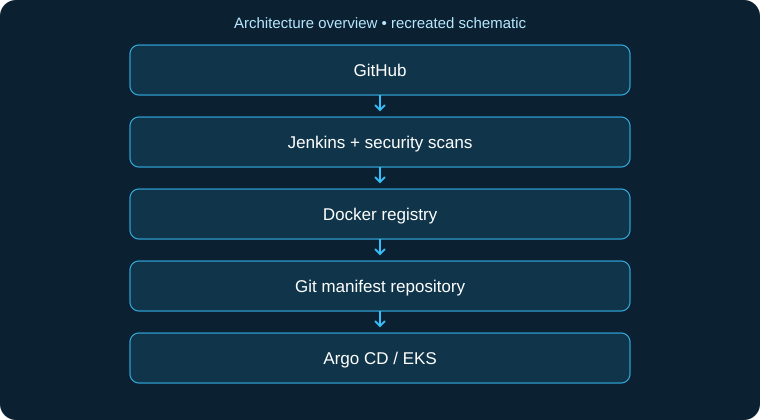
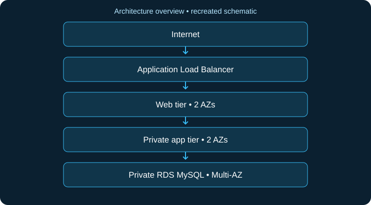

MICROSERVICES

CloudCart Microservices Platform
Cloud-native e-commerce application with containerized services on AWS Kubernetes (kOps), backed by MySQL and Redis with Prometheus and Grafana monitoring.
View on GitHub ↗Entry-level DevOps Engineer focused on AWS, Terraform, Kubernetes, CI/CD, DevSecOps and GitOps. I build secure, repeatable cloud infrastructure and automated delivery workflows through hands-on projects.
I’m Abhishek Saste, a B.Sc. Computer Science graduate and DevOps trainee at NareshIT, Hyderabad. My hands-on projects focus on AWS infrastructure, Kubernetes, Terraform and security-focused CI/CD pipelines.
I work with Jenkins, Argo CD, SonarQube, Trivy, Prometheus and Grafana to automate deployments and improve observability. I am preparing for the AWS Solutions Architect – Associate certification.
EC2, S3, EBS, EFS, IAM, VPC, RDS, ALB, Auto Scaling, EKS, ECR, Route 53, ACM, CloudWatch, Elastic Beanstalk
Terraform modules, remote state, Ansible, YAML
Jenkins, Git, GitHub Actions, Argo CD, Nexus, npm
Docker, Docker Hub, Helm, Amazon EKS, kubectl
SonarQube, OWASP Dependency-Check, Trivy, IAM, Security Groups
Prometheus, Grafana, CloudWatch
RHEL, systemd, LVM, logs, TCP/IP, DNS, HTTP/HTTPS, SSL/TLS
Bash, Python, Java, Apache, Nginx, Tomcat, MobaXterm
Cloud-native e-commerce application with containerized services on AWS Kubernetes (kOps), backed by MySQL and Redis with Prometheus and Grafana monitoring.
View on GitHub ↗
Security-focused Jenkins pipeline for React Tetris with code analysis, vulnerability scanning, Docker publishing and Argo CD synchronization to Amazon EKS.
View on GitHub ↗
Automated application delivery workflow combining CI/CD, security checks, container builds and cloud deployment.
View on GitHub ↗
Reusable Terraform modules provision a multi-AZ AWS VPC, load-balanced web tier, private application tier and Multi-AZ RDS MySQL database with S3 remote state.
View on GitHub ↗Multi-Cloud DevSecOps with AI training: AWS, Linux, CI/CD, Docker, Kubernetes, Terraform, Ansible and GitOps, with AIOps and MLOps fundamentals.
Built a Jenkins and Argo CD workflow for Tetris; reduced manual deployment time from approximately 30 minutes to under 5 minutes in the project environment.
72.73% • CGPA 8.64
In progress • SAA-C03 • Exam planned for December 2026
I'm open to opportunities, collaboration and cloud/DevOps discussions.